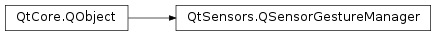

QSensorGestureManager¶
Synopsis¶
Functions¶
- def
gestureIds() - def
recognizerSignals(recognizerId) - def
registerSensorGestureRecognizer(recognizer)
Signals¶
- def
newSensorGestureAvailable()
Static functions¶
- def
sensorGestureRecognizer(id)
Detailed Description¶
The
PySide2.QtSensors.QSensorGestureManagerclass manages sensor gestures, registers and creates sensor gesture plugins.Sensor Gesture plugins register their recognizers using the
PySide2.QtSensors.QSensorGestureManager.registerSensorGestureRecognizer()function.// Create a QSensorGestureManager QSensorGestureManager gestureManager; // Get a list of known recognizers QStringList recognizersList = gestureManager.gestureIds(); // Create a QSensorGeture object for each of those gesture recognizers QSensorGesture *gesture = new QSensorGesture( gestureManager.gestureIds(), this); // Connect the known signals up. connect(gesture, SIGNAL(detected(QString)), this, SLOT(gestureDetected(QString)));
-
class
PySide2.QtSensors.QSensorGestureManager([parent=Q_NULLPTR])¶ Parameters: parent – PySide2.QtCore.QObjectConstructs the
PySide2.QtSensors.QSensorGestureManageras a child ofparent
-
PySide2.QtSensors.QSensorGestureManager.gestureIds()¶ Return type: list of strings Returns the list of the currently registered gestures. Includes all the standard built-ins as well as available plugins.
-
PySide2.QtSensors.QSensorGestureManager.newSensorGestureAvailable()¶
-
PySide2.QtSensors.QSensorGestureManager.recognizerSignals(recognizerId)¶ Parameters: recognizerId – unicode Return type: list of strings Returns the list of all the gesture signals for the registered
gestureIdgesture recognizer id.
-
PySide2.QtSensors.QSensorGestureManager.registerSensorGestureRecognizer(recognizer)¶ Parameters: recognizer – PySide2.QtSensors.QSensorGestureRecognizerReturn type: PySide2.QtCore.boolRegisters the sensor recognizer
recognizerfor use.PySide2.QtSensors.QSensorGestureManagerretains ownership of the recognizer object. Returns true unless the gesture has already been registered, in which case the object is deleted.
-
static
PySide2.QtSensors.QSensorGestureManager.sensorGestureRecognizer(id)¶ Parameters: id – unicode Return type: PySide2.QtSensors.QSensorGestureRecognizerReturns the sensor gesture object for the recognizer
id.
© 2018 The Qt Company Ltd. Documentation contributions included herein are the copyrights of their respective owners. The documentation provided herein is licensed under the terms of the GNU Free Documentation License version 1.3 as published by the Free Software Foundation. Qt and respective logos are trademarks of The Qt Company Ltd. in Finland and/or other countries worldwide. All other trademarks are property of their respective owners.